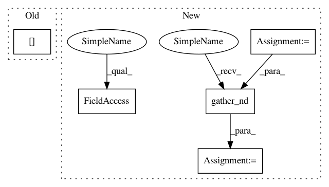

62d2ea56ae4a090aa68baf133137982a836700bd,thumt/utils/search.py,,create_inference_graph,#Any#Any#Any#,430
Before Change
initial_ids = tf.fill([batch_size], tf.constant(bos_id, dtype=tf.int32))
inputs_old = features["source"]
inputs_length_old = features["source_length"]
// Expand the inputs in to the beam size
// [batch, length] => [batch, beam_size, length]
features["source"] = tf.expand_dims(features["source"], 1)
After Change
def create_inference_graph(model_fns, features, params):
features = copy.copy(features)
if not isinstance(model_fns, (list, tuple)):
model_fns = [model_fns]
decode_length = params.decode_length
beam_size = params.beam_size
top_beams = params.top_beams
alpha = params.decode_alpha
// [batch, decoded_ids] => [batch, vocab_size]
def symbols_to_logits_fn(decoded_ids):
features["target"] = tf.pad(decoded_ids[:, 1:], [[0, 0], [0, 1]])
features["target_length"] = tf.fill([tf.shape(features["target"])[0]],
tf.shape(features["target"])[1])
results = []
for i, model_fn in enumerate(model_fns):
results.append(model_fn(features))
return results
batch_size = tf.shape(features["source"])[0]
// Prepend <bos> symbol
bos_id = params.mapping["target"][params.bos]
initial_ids = tf.fill([batch_size], tf.constant(bos_id, dtype=tf.int32))
// Expand the inputs in to the beam size
// [batch, length] => [batch, beam_size, length]
features["source"] = tf.expand_dims(features["source"], 1)
features["source"] = tf.tile(features["source"], [1, beam_size, 1])
shape = tf.shape(features["source"])
// [batch, beam_size, length] => [batch * beam_size, length]
features["source"] = tf.reshape(features["source"],
[shape[0] * shape[1], shape[2]])
// For source sequence length
features["source_length"] = tf.expand_dims(features["source_length"], 1)
features["source_length"] = tf.tile(features["source_length"],
[1, beam_size])
shape = tf.shape(features["source_length"])
// [batch, beam_size, length] => [batch * beam_size, length]
features["source_length"] = tf.reshape(features["source_length"],
[shape[0] * shape[1]])
vocab_size = len(params.vocabulary["target"])
// Setting decode length to input length + decode_length
decode_length = tf.shape(features["source"])[1] + decode_length
ids, scores = beam_search(symbols_to_logits_fn, initial_ids,
beam_size, decode_length, vocab_size,
alpha,
eos_id=params.mapping["target"][params.eos],
lp_constant=params.decode_constant)
mask = tf.not_equal(ids, 0)
output_length = tf.reduce_sum(tf.to_float(mask), axis=-1)
// shape: [batch, beam_size]
normalized_scores = scores / output_length
if params.decode_normalize:
scores, indices = tf.nn.top_k(normalized_scores, k=top_beams)
// shape of ids: [batch, beam_size, max_length]
// shape of coordinates: [batch, beam_size, 2]
batch_pos = compute_batch_indices(batch_size, beam_size)
coordinates = tf.stack([batch_pos, indices], axis=2)
ids = tf.gather_nd(ids, coordinates)
// Return `top_beams` decoding
// (also remove initial id from the beam search)
return ids[:, :top_beams, 1:], scores[:, :top_beams]
In pattern: SUPERPATTERN
Frequency: 3
Non-data size: 5
Instances
Project Name: THUNLP-MT/THUMT
Commit Name: 62d2ea56ae4a090aa68baf133137982a836700bd
Time: 2018-01-25
Author: playinf@stu.xmu.edu.cn
File Name: thumt/utils/search.py
Class Name:
Method Name: create_inference_graph
Project Name: tensorflow/transform
Commit Name: 319d76de1d740a0500b9bc321ddc40bf3c032f71
Time: 2021-01-26
Author: zoy@google.com
File Name: tensorflow_transform/tf_utils.py
Class Name:
Method Name: reduce_batch_count_mean_and_var
Project Name: tensorflow/cleverhans
Commit Name: 4887ef8baecbf5315ec0f235e56a4f93cd05aad7
Time: 2018-10-04
Author: nottombrown@gmail.com
File Name: cleverhans/attacks_tf.py
Class Name:
Method Name: spm
Project Name: THUNLP-MT/THUMT
Commit Name: 62d2ea56ae4a090aa68baf133137982a836700bd
Time: 2018-01-25
Author: playinf@stu.xmu.edu.cn
File Name: thumt/utils/search.py
Class Name:
Method Name: create_inference_graph